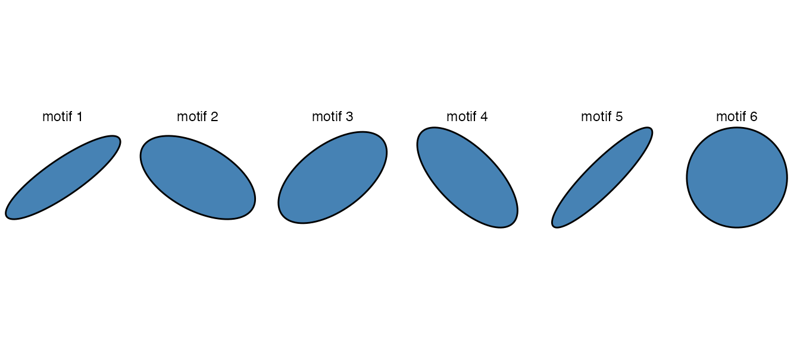
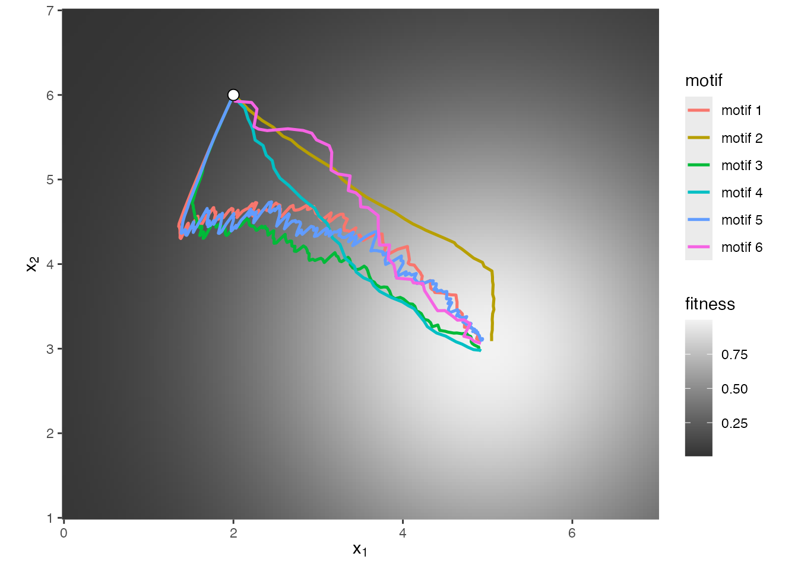

grnland simulates populations whose phenotypes are the steady states of gene regulatory networks (GRNs). Genotypes are network parameters, development solves the network dynamics, and selection acts on the resulting phenotypes on an adaptive landscape of your choice. Because the genotype-phenotype map is a dynamical system, the variation that mutation produces (the M-matrix) depends on the network and changes as the population evolves.
The workflow has four steps: define a model, map genotypes to phenotypes, define a landscape, and simulate a population on it.
1. Define a network
Networks are written as edges: "a -> b" means a
activates b, "a -| b" means a represses b.
Each gene follows Hill-type kinetics,
\[\dot x_i = \alpha_i \prod_j H_{ij}(x_j) - \gamma_i x_i,\]
with production rate \(\alpha_i\), decay rate \(\gamma_i\), and \(H_{ij}(x) = x^h/(\theta^h + x^h)\) for activation, \(1 - x^h/(\theta^h + x^h)\) for repression.
m <- grn(c("a -> b", "b -| c", "c -> a", "a -| c"),
alpha = c(4, 6, 8), theta = 3,
evolvable = c("alpha", "theta"), # parameters that mutate
traits = c("b", "c")) # genes under selection
m
#> <hill_grn> 3 genes, 7 loci, traits: b, c
#> edges: a -> b, a -| c, b -| c, c -> a
#> loci: alpha[a], alpha[b], alpha[c], theta[a,c], theta[b,a], theta[c,a], theta[c,b]Any parameter can be a locus: whole classes ("alpha",
"gamma", "theta", "hill") or
single entries ("alpha[b]", "theta[c,a]").
Genes not listed in traits still develop and regulate, but
are invisible to selection.
The six two-gene motifs of the paper are built in:
paper_motif(3) # x1 -> x2, x2 -| x1
#> <hill_grn> 2 genes, 2 loci, traits: x1, x2
#> edges: x1 -> x2, x2 -| x1
#> loci: alpha[x1], alpha[x2]2. Genotype to phenotype
g <- default_genotype(m)
g
#> [1] 4 6 8 3 3 3 3
phenotype(m, g) # steady state of the trait genes
#> b c
#> 2.335530 2.747221
develop(m, g)$status # 0 = converged to a stable steady state
#> [1] 0genotype_at() goes the other way, finding a genotype
that develops into a target phenotype:
mot <- paper_motif(5)
g5 <- genotype_at(mot, c(2, 6))
phenotype(mot, g5)
#> x1 x2
#> 2 6Sensitivities and the M-matrix
The sensitivity matrix \(S = \partial x^*/\partial p\) is computed analytically from the Jacobian of the dynamics (\(S = -J^{-1}\,\partial f/\partial p\)). With per-locus mutation rate \(\mu\) and mutational effect \(\sigma\), the M-matrix is \(M = S\,\Sigma\,S^\top\) with \(\Sigma = \mu\sigma^2 I\) (times the ploidy).
m_matrix(mot, phenotype = c(2, 6), mu = 0.01, sigma = 0.05)
#> x1 x2
#> x1 1.641190e-05 3.562623e-05
#> x2 3.562623e-05 7.936391e-05The same phenotype has a differently shaped M under each motif. Here are the six paper motifs at one phenotype, each scaled to unit trace:
library(ggplot2)
ellipse <- function(M, n = 100) {
e <- eigen(M / sum(diag(M)), symmetric = TRUE)
t <- seq(0, 2 * pi, length.out = n)
pts <- cbind(cos(t), sin(t)) %*% diag(sqrt(pmax(e$values, 0))) %*% t(e$vectors)
data.frame(x = pts[, 1], y = pts[, 2])
}
shapes <- do.call(rbind, lapply(1:6, function(k)
cbind(ellipse(m_matrix(paper_motif(k), phenotype = c(3, 3))), motif = paste("motif", k))))
ggplot(shapes, aes(x, y)) + geom_polygon(fill = "steelblue", colour = "black") +
facet_wrap(~motif, nrow = 1) + coord_equal() + theme_void()
3. Landscapes
A landscape is any function from a phenotype matrix (one row per individual) to fitness values. Constructors cover the common cases:
single <- landscape_gaussian(c(5, 3), omega = 4) # one Gaussian peak
rugged <- landscape_perlin(frequency = 0.3, seed = 6) # Perlin noise
twin <- landscape_smoothmax(landscape_gaussian(c(4, 4), 2),
landscape_gaussian(c(7, 7), 2)) # smooth maximum
find_peaks(rugged, lower = 0, upper = 10)
#> x1 x2 fitness
#> 1 9.498998 1.543086 0.7741733
#> 2 5.951904 2.044088 0.7024886
#> 3 1.783567 2.525050 0.7891941
#> 4 9.158317 6.873747 0.5752231
#> 5 4.929860 7.474950 0.8306507
#> 6 1.903808 8.977956 0.8157665landscape_grid() caches a slow landscape on a grid and
interpolates bilinearly, which speeds up Perlin landscapes about
three-fold in simulations.
4. Simulate
land <- landscape_gaussian(c(5, 3), omega = 4)
sim <- simulate_population(paper_motif(1), land, start = c(2, 6),
N = 500, generations = 3000, mu = 0.01, sigma = 0.05,
stop = stop_at_peaks(matrix(c(5, 3), 1)),
record_every = 20, seed = 1)
sim
#> <grn_sim> 1930 generations, N = 500, clonal, ploidy 1
#> final mean phenotype: x1 = 4.917, x2 = 3.097
#> outcome (peak reached): 1
head(sim$trajectory)
#> generation mean_x1 mean_x2 P_x1_x1 P_x1_x2 P_x2_x2
#> 1 0 2.000000 6.000000 0.0000000000 0.0000000000 0.000000000
#> 2 20 1.895706 5.772462 0.0012175551 0.0026894564 0.005946854
#> 3 40 1.717282 5.365507 0.0007538154 0.0017142964 0.003989614
#> 4 60 1.503385 4.854077 0.0006401127 0.0015872279 0.003951387
#> 5 80 1.359507 4.480000 0.0005941564 0.0015438651 0.004086775
#> 6 100 1.355875 4.442836 0.0001850443 0.0004656127 0.001187334
#> mean_fitness n_invalid
#> 1 0.1053992 0
#> 2 0.1146418 0
#> 3 0.1291280 0
#> 4 0.1410643 0
#> 5 0.1449996 0
#> 6 0.1465559 0The trajectory records the mean phenotype, the phenotypic covariance
matrix (P_*), mean fitness and the number of individuals
whose development failed. Set record_m = TRUE to also
record the M-matrix at the mean genotype.
Options include:
-
ploidy = 2, reproduction = "sexual"for diploid sexual populations with free recombination (sexes = TRUEfor separate sexes); -
selection = selection_proportional()orselection_exponential(s)instead of the default of the original scripts (w - min(w) + 0.001); -
invalid = "reject"to resample offspring whose development fails instead of treating them as lethal; -
stop = stop_at_peaks(peaks)to stop when the population sits on a peak.
Different networks, different paths
Even on a single symmetric peak, the network shapes the path. All six motifs start from the same phenotype and climb the same peak:
paths <- do.call(rbind, lapply(1:6, function(k) {
s <- simulate_population(paper_motif(k), land, start = c(2, 6), N = 500,
generations = 3000, record_every = 10, seed = k,
stop = stop_at_peaks(matrix(c(5, 3), 1)))
cbind(s$trajectory[, c("generation", "mean_x1", "mean_x2")], motif = paste("motif", k))
}))
bg <- expand.grid(x1 = seq(0, 7, length.out = 150), x2 = seq(1, 7, length.out = 150))
bg$w <- land(as.matrix(bg))
ggplot(bg, aes(x1, x2)) + geom_raster(aes(fill = w)) +
scale_fill_gradient(low = "grey20", high = "grey95", name = "fitness") +
geom_path(data = paths, aes(mean_x1, mean_x2, colour = motif), linewidth = 0.9) +
annotate("point", 2, 6, shape = 21, size = 3, fill = "white") +
coord_equal(expand = FALSE) + labs(x = expression(x[1]), y = expression(x[2]))
Motifs whose M has positive covariance between the traits (1, 3, 5) first move down and to the left, along the long axis of their M, where fitness rises fastest for the variation they have, and only then turn towards the peak. Motifs with negative covariance (2, 4) head right, and the unregulated motif 6 takes the most direct route. On rugged landscapes such differences can decide which peak is reached: see the article Paper figures and examples.
Beyond Hill networks
Custom dynamics. grn_custom() takes any
ODE right-hand side, for regulatory logic the Hill model cannot express
(additive inputs, basal expression). It runs in R and is slower.
cm <- grn_custom(
function(x, p) c(p[["a1"]] - x[1],
p[["a2"]] * (0.2 + x[1] / (5 + x[1])) - x[2]),
params = c(a1 = 2, a2 = 2), genes = c("x1", "x2"))
phenotype(cm, default_genotype(cm))
#> x1 x2
#> 2.0000000 0.9714286Linear maps. gp_linear(B) gives the
linear genotype-phenotype map \(x =
B\alpha\), with a constant M-matrix, a useful null model:
lin <- gp_linear(matrix(c(5, 4, 4, 5) / 3, 2))
m_matrix(lin, phenotype = c(1, 1))
#> x1 x2
#> x1 0.0001138889 0.0001111111
#> x2 0.0001111111 0.0001138889Basins under the Lande equation.
lande_separatrices() traces basin borders for deterministic
evolution \(\dot{\bar z} = G\,\nabla
W\) with \(G \propto M\), which
can be compared with simulated outcomes.
More traits. Nothing is specific to two traits:
networks can have any number of genes, and traits chooses
which are selected. Landscapes in more dimensions can be Gaussian,
Perlin (3D) or any function.